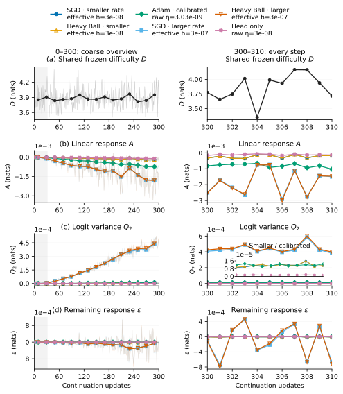
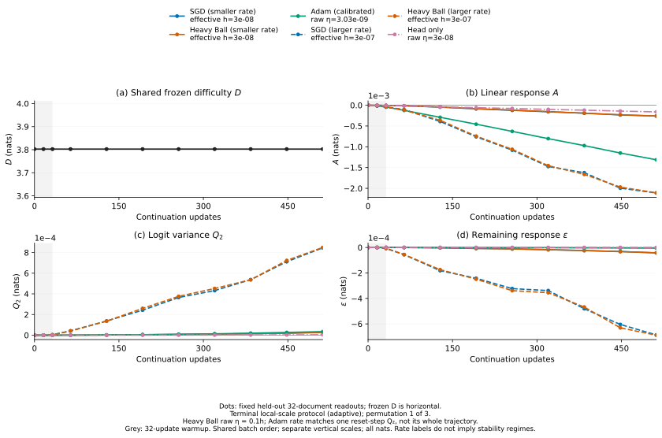
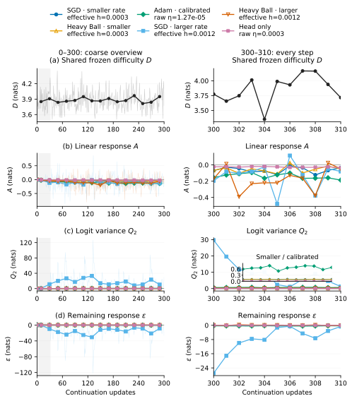
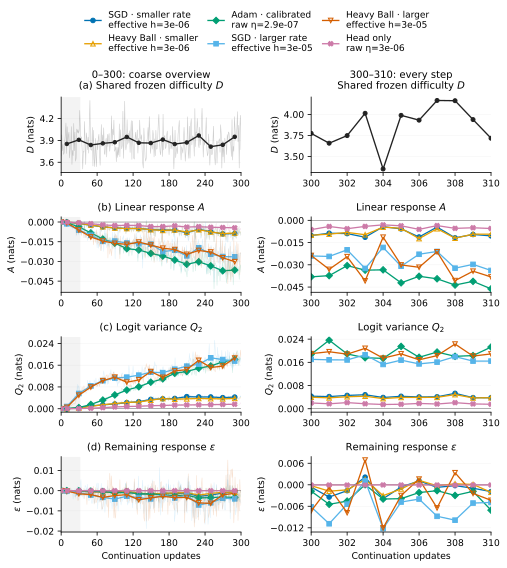

Shared Difficulty and Local Learning Response共享难度与局部学习响应
Starting from one late checkpoint, we restart six training settings with the same warmup and data stream. Frozen difficulty is shared; linear response, logit variance, and the remaining response distinguish the settings. We measure every term instead of fitting a loss offset.从同一个较晚 checkpoint 出发，六个训练设置用相同的 warmup 和数据流重新开始。冻结难度是 shared 的；线性响应、logit 方差与余项区分各个设置。我们直接测量每个项，不拟合 loss 偏移。
Visual abstract图文摘要
| Term分解项 | Definition定义 | What is held fixed or measured固定什么、测量什么 |
|---|---|---|
| DShared difficulty共享难度 | D(B) = Lθ₀(B) | Frozen-model cross-entropy on the same real prefixes, targets, and masks.冻结模型在同一真实前缀、目标和 mask 上的交叉熵。 |
| ALinear response线性响应 | At(B) = gB(θ₀)ᵀ(θt − θ₀) | The frozen batch gradient g_B dotted with the actual parameter displacement. θ₀ and θ_t denote initial and current parameters; the response is zero at the restart.冻结起点的 batch 梯度 g_B 与实际参数位移点乘。θ₀、θ_t 分别表示起点和当前参数；重启时响应为零。 |
| Q₂Logit variancelogit 方差 | Q2,t(B) = ½ mean Varp₀(Δzt) | Half the nonnegative variance of the logit change across all 50,304 vocabulary entries, weighted by frozen probabilities and averaged over scored targets.计算 logit 位移在完整 50,304 词表上的非负方差，以冻结概率加权、乘以一半，再对评分目标取均值。 |
| εMeasured remainder实测余项 | εt(B) = Lt(B) − D(B) − At(B) − Q2,t(B) | Everything remaining after the measured first three terms; no fitted slope or intercept.扣除前三个实测项后的全部响应；未拟合斜率或截距。 |
Measured scales in the terminal local protocol最后一轮局部尺度的实测量级
| Term and statistic分解项与统计量 | SGD · smaller rateSGD · 较小步长h = 3 × 10-8 | Heavy Ball · smaller rateHeavy Ball · 较小步长h = 3 × 10-8 | Adam · calibratedAdam · 校准步长η = 3.027 × 10-9 | SGD · larger rateSGD · 较大步长h = 3 × 10-7 | Heavy Ball · larger rateHeavy Ball · 较大步长h = 3 × 10-7 | Output head only只更新输出头h = 3 × 10-8 |
|---|---|---|---|---|---|---|
| D · batch standard deviationD · batch 标准差 | SGD · smaller rateSGD · 较小步长h = 3 × 10-80.1853–0.1863 | Heavy Ball · smaller rateHeavy Ball · 较小步长h = 3 × 10-80.1853–0.1863 | Adam · calibratedAdam · 校准步长η = 3.027 × 10-90.1853–0.1863 | SGD · larger rateSGD · 较大步长h = 3 × 10-70.1853–0.1863 | Heavy Ball · larger rateHeavy Ball · 较大步长h = 3 × 10-70.1853–0.1863 | Output head only只更新输出头h = 3 × 10-80.1853–0.1863 |
| A · meanA · 均值 | SGD · smaller rateSGD · 较小步长h = 3 × 10-8(−1.778 to −1.761) × 10-4 | Heavy Ball · smaller rateHeavy Ball · 较小步长h = 3 × 10-8(−1.759 to −1.748) × 10-4 | Adam · calibratedAdam · 校准步长η = 3.027 × 10-9(−6.596 to −6.563) × 10-4 | SGD · larger rateSGD · 较大步长h = 3 × 10-7(−1.475 to −1.445) × 10-3 | Heavy Ball · larger rateHeavy Ball · 较大步长h = 3 × 10-7(−1.473 to −1.439) × 10-3 | Output head only只更新输出头h = 3 × 10-8(−9.475 to −9.393) × 10-5 |
| Q₂ · meanQ₂ · 均值 | SGD · smaller rateSGD · 较小步长h = 3 × 10-8(1.08 to 1.263) × 10-5 | Heavy Ball · smaller rateHeavy Ball · 较小步长h = 3 × 10-8(1.075 to 1.255) × 10-5 | Adam · calibratedAdam · 校准步长η = 3.027 × 10-9(1.118 to 1.133) × 10-5 | SGD · larger rateSGD · 较大步长h = 3 × 10-7(3.418 to 3.976) × 10-4 | Heavy Ball · larger rateHeavy Ball · 较大步长h = 3 × 10-7(3.441 to 4.068) × 10-4 | Output head only只更新输出头h = 3 × 10-8(1.435 to 1.455) × 10-6 |
| ε · root mean squareε · 均方根 RMS | SGD · smaller rateSGD · 较小步长h = 3 × 10-8(2.422 to 3.488) × 10-5 | Heavy Ball · smaller rateHeavy Ball · 较小步长h = 3 × 10-8(2.427 to 3.53) × 10-5 | Adam · calibratedAdam · 校准步长η = 3.027 × 10-9(2.614 to 2.872) × 10-6 | SGD · larger rateSGD · 较大步长h = 3 × 10-7(3.984 to 4.648) × 10-4 | Heavy Ball · larger rateHeavy Ball · 较大步长h = 3 × 10-7(4.071 to 4.78) × 10-4 | Output head only只更新输出头h = 3 × 10-8(2.762 to 2.863) × 10-9 |
All entries are in nats over the full 512 arriving batches. Ranges span three paired permutations of one reused data pool, not independent datasets or confidence intervals. Standard deviation, mean, and RMS are different statistics. h is the dc-matched effective rate for SGD / Heavy Ball; Adam uses its separately calibrated raw rate η.表格全部使用完整 512 个到达 batch，单位 nats。范围来自同一数据池的三种配对排列，不是独立数据集重复，也不是置信区间。标准差、均值和 RMS 是不同统计量。h 是 SGD / Heavy Ball 的 dc 匹配有效步长；Adam 使用单独校准的原始学习率 η。
Frozen D explains 99.99262–99.99996% of raw arriving-batch loss variation in this protocol. The A + Q₂ approximation has 0.00241–30.04017% response-relative RMS error; 6/18 setting × permutation runs pass the prespecified 10% gate. These numbers describe the realized trajectories.本轮冻结 D 解释原始到达 batch loss 变化的 99.99262–99.99996%。A + Q₂ 近似的响应相对 RMS 误差为 0.00241–30.04017%；6/18 个设置 × 排列通过预设的 10% 门槛。这些数值描述已经发生的轨迹。
How the four contributions develop四个贡献如何展开

The frozen difficulty curve varies because the arriving batch varies. On a fixed probe, that same quantity must be constant. Block means make the curves readable; they do not by themselves establish low-frequency dynamics.冻结难度曲线的起伏来自到达 batch 的变化。在固定 probe 上，同一数量必须保持常数。Block 均值只是帮助阅读，不能单独建立低频动力学。
Fixed-probe companion: D remains constant固定 probe 对照：D 保持常数

What lies inside the remainder余项里面具体是什么
W = mean (p₀ − ey)ᵀΔz · Q = mean KL(p₀ ∥ pt) ≥ 0
R = W − A · ε = R + (Q − Q₂)
p₀ and pₜ are frozen and current conditional distributions. W uses the actual logit change; A uses the parameter displacement. R measures network nonlinearity, and Q − Q₂ measures the softmax approximation error.p₀、pₜ 是冻结和当前模型的条件分布。W 使用实际 logit 变化，A 使用参数位移。R 测量网络非线性，Q − Q₂ 测量 softmax 的近似误差。
The output-head-only branch isolates the two sources: its frozen hidden states make logits affine in the updated output matrix, so R = 0 up to numerical precision. Its ε contains only Q − Q₂. For full-network updates R is generally second order, so ε cannot be assumed cubic or negligible relative to Q₂.只更新输出头的分支分离这两个来源：隐藏状态冻结后，logit 是输出矩阵的仿射函数，因此 R = 0（到数值精度）。这时 ε 只包含 Q − Q₂。全网络更新中的 R 一般是二阶项，不能假设 ε 是三阶小量，也不能假设它相对 Q₂ 可以忽略。
In the terminal protocol the smaller-rate SGD / Heavy Ball errors remain 10.51089–15.21092%, above the 10% gate. The RMS of the observed network remainder R is larger than the mean Q₂ there. Adam achieves 0.33866–0.37478%; the affine-head control achieves 0.00241–0.00247%. Thus small numerical learning rates alone do not make the full-network remainder negligible, and the controlled head branch identifies the missing network contribution.最后一轮较小步长的 SGD / Heavy Ball 误差仍为 10.51089–15.21092%，高于 10% 门槛；实测网络余项 R 的 RMS 也大于此处 Q₂ 的均值。Adam 的误差为 0.33866–0.37478%，仿射输出头对照为 0.00241–0.00247%。因此数值上很小的学习率本身并不能让全网络余项可忽略，受控的输出头分支定位了缺失的网络贡献。
Keep the larger-rate failures in view保留较大步长的失败结果
The first protocol failed local-response closure. We then registered two reductions before measuring their trajectories and kept all six settings and all three permutations. This is an adaptive scale study. All protocols run 512 updates; smaller rates also cover less effective progress. Their ranges are reported separately.第一轮没有通过局部响应近似的门槛。此后在测量新轨迹之前登记了两轮缩小步长，并保留六个设置及三种排列。这是自适应的尺度研究。所有协议都运行 512 次更新；步长变小也意味着有效进程变短。各轮范围单独报告。
| Protocol协议 | Training setting and actual rate训练设置与实际步长 | Response relative RMS error响应相对 RMS 误差 | ≤10% passes≤10% 通过数 |
|---|---|---|---|
| Initial rates初始步长 | SGD · smaller rateSGD · 较小步长h = 3 × 10-4 | 129.49699–150.68583% | 0/3 |
| Initial rates初始步长 | Heavy Ball · smaller rateHeavy Ball · 较小步长h = 3 × 10-4 | 200.26258–222.66230% | 0/3 |
| Initial rates初始步长 | Adam · calibratedAdam · 校准步长η = 1.269 × 10-5 | 177.95884–178.69256% | 0/3 |
| Initial rates初始步长 | SGD · larger rateSGD · 较大步长h = 1.2 × 10-3 | 862.28428–1011.34234% | 0/3 |
| Initial rates初始步长 | Heavy Ball · larger rateHeavy Ball · 较大步长h = 1.2 × 10-3 | 113.82988–127.87517% | 0/3 |
| Initial rates初始步长 | Output head only只更新输出头h = 3 × 10-4 | 21.48834–22.16084% | 0/3 |
| First reduction第一次缩小 | SGD · smaller rateSGD · 较小步长h = 3 × 10-6 | 33.83137–44.66251% | 0/3 |
| First reduction第一次缩小 | Heavy Ball · smaller rateHeavy Ball · 较小步长h = 3 × 10-6 | 34.50257–37.95727% | 0/3 |
| First reduction第一次缩小 | Adam · calibratedAdam · 校准步长η = 2.899 × 10-7 | 19.96759–20.38608% | 0/3 |
| First reduction第一次缩小 | SGD · larger rateSGD · 较大步长h = 3 × 10-5 | 47.68191–48.96705% | 0/3 |
| First reduction第一次缩小 | Heavy Ball · larger rateHeavy Ball · 较大步长h = 3 × 10-5 | 47.82464–50.88798% | 0/3 |
| First reduction第一次缩小 | Output head only只更新输出头h = 3 × 10-6 | 2.24042–2.42054% | 3/3 |
| Terminal local scale最后的局部尺度 | SGD · smaller rateSGD · 较小步长h = 3 × 10-8 | 10.51089–14.95508% | 0/3 |
| Terminal local scale最后的局部尺度 | Heavy Ball · smaller rateHeavy Ball · 较小步长h = 3 × 10-8 | 10.56043–15.21092% | 0/3 |
| Terminal local scale最后的局部尺度 | Adam · calibratedAdam · 校准步长η = 3.027 × 10-9 | 0.33866–0.37478% | 3/3 |
| Terminal local scale最后的局部尺度 | SGD · larger rateSGD · 较大步长h = 3 × 10-7 | 25.54090–29.24484% | 0/3 |
| Terminal local scale最后的局部尺度 | Heavy Ball · larger rateHeavy Ball · 较大步长h = 3 × 10-7 | 26.13461–30.04017% | 0/3 |
| Terminal local scale最后的局部尺度 | Output head only只更新输出头h = 3 × 10-8 | 0.00241–0.00247% | 3/3 |


Shared loss fluctuations are only one part of RGI共享 loss 起伏只是 RGI 的一部分
Relative generalization invariance (RGI) concerns an approximately sample-independent loss difference between models. On paired samples D cancels exactly, leaving ΔL = ΔA + ΔQ₂ + Δε. A constant offset requires this remaining response to be nearly constant across tokens; high raw-loss correlation does not check that condition.相对泛化不变性（RGI）要求模型间的 loss 差近似不随样本改变。在配对样本上 D 精确抵消，只剩 ΔL = ΔA + ΔQ₂ + Δε。常数偏移要求这个剩余响应在 token 间近似恒定；原始 loss 的高相关性没有检验这一条件。
| Paired settings配对设置 | Mean gap (nats)平均差（nats） | Centered token std (nats)中心化 token 标准差（nats） | std / |mean|标准差 / |均值| |
|---|---|---|---|
| SGD · smaller rate − Heavy Ball · smaller rateSGD · 较小步长 − Heavy Ball · 较小步长 | (−3.141 to 1.796) × 10-6 | (1.46 to 2.936) × 10-4 | 46.49–163.5 |
| SGD · larger rate − Heavy Ball · larger rateSGD · 较大步长 − Heavy Ball · 较大步长 | (−1.035 to 0.9982) × 10-5 | (1.477 to 2.664) × 10-3 | 185.4–323.8 |
| Adam · calibrated − Output head onlyAdam · 校准步长 − 只更新输出头 | (−1.127 to −1.121) × 10-3 | (7.674 to 7.691) × 10-3 | 6.812–6.86 |
Ranges are across three permutations; final measurements use the same 7,136 held-out target tokens. The constant-gap gate is token std / |mean gap| ≤ 0.1. Across all defined method-pair × permutation tests in this protocol, 0/45 pass. Ratios are undefined when |mean| ≤ 10⁻⁸; absolute nats are retained. Adam − head only compares different training interventions.范围来自三种排列；终态均在同一组 7,136 个 held-out 目标 token 上测量。常数差门槛为 token 标准差 / |平均差| ≤ 0.1。本轮全部有定义的方法对 × 排列检验中，0/45 个通过。|均值| ≤ 10⁻⁸ 时比值未定义；同时保留绝对 nats。Adam − 只更新输出头比较的是不同训练干预。
A Journey to the Edge of Stability reports nearly coincident low-rate loss and sharpness traces after dc-gain normalization for fixed linear gradient filters on CIFAR-10. Its leading local gradient-flow term is shared; filter-specific corrections enter at the next order. This motivates our SGD / normalized Heavy Ball pair. It does not cover Adam preconditioning or prove a constant token-wise loss gap. Restarting momentum also produces a visible startup transient.A Journey to the Edge of Stability 在 CIFAR-10 上研究固定线性梯度滤波器，经过 dc gain 归一化后，小步长的 loss 与 sharpness 曲线近似重合。其局部梯度流的首项共享，滤波器差异进入下一阶。这支持我们的 SGD / 归一化 Heavy Ball 配对；它没有覆盖 Adam 预条件，也没有证明 token 级常数 loss 差。重启 momentum 还会带来可见的启动暂态。
Experiment and evidence实验与证据
Pythia-70M, official Pile step 143,000 → FineWeb sample-10BT continuation. Same checkpoint, tokenizer, prefix/target mask, and paired data order; optimizer state reset; 32-update linear warmup; batch 8; context 256 with 33 prefix tokens and 223 scored targets. Each protocol has six settings × three permutations × 512 updates. The pool split is 4,096 / 64 / 512 training / calibration / evaluation documents. The fixed probe uses 32 evaluation documents.Pythia-70M 从 official Pile step 143,000 → FineWeb sample-10BT 续训。共同 checkpoint、tokenizer、前缀 / 目标 mask 与配对数据顺序；重置优化器状态；32-update 线性 warmup；batch 8；context 256，其中 33 个前缀 token、223 个评分目标。每轮六个设置 × 三种排列 × 512 次更新。数据池划分为 4,096 / 64 / 512 篇训练 / 校准 / 评估文档；固定 probe 使用 32 篇评估文档。
Heavy Ball uses β = 0.9 with raw rate 0.1h, giving the same dc gain as SGD. Adam uses β = (0.9, 0.95); its raw rate is calibrated using one-step Q₂ on the first 16 calibration documents, without fitting the evaluation curves. The output-head branch preserves the initial predictive function while restricting which parameters update.Heavy Ball 使用 β = 0.9、原始步长 0.1h，与 SGD 的 dc gain 匹配。Adam 使用 β = (0.9, 0.95)；其原始步长依据前 16 篇校准文档的一步 Q₂ 校准，未拟合评估曲线。输出头分支保持初始预测函数不变，只限制更新的参数。
The decomposition measures completed trajectories, not unknown future updates. Natural text gives one observed next token per prefix, so D is frozen-model cross-entropy rather than a known Bayes entropy. This finite continuation is not a from-scratch reproduction of the original RGI study.此分解测量已经完成的轨迹，不预测未知的未来更新。自然文本对一个前缀只给出一个实际 next token，因此 D 是冻结模型交叉熵，而非已知的 Bayes 熵。本研究是有限续训，没有复现原始 RGI 的从头训练实验。